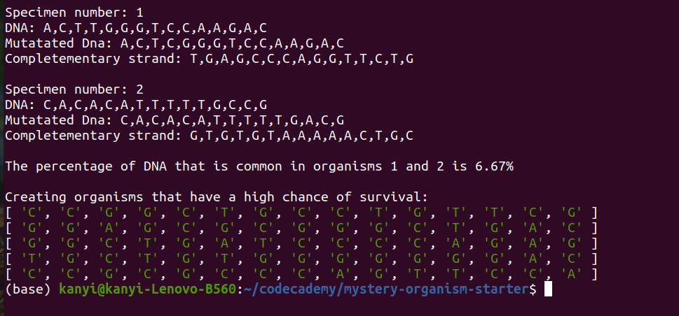

Programming Languages
- HTML/CSS
- JavaScript
- Python

I am an aspiring self-taught Full Stack Web Developer. My interests are in Javascript and Python. For the past few months, I have been learning about Front End development using HTML, CSS and JavaScript. I am also interested in building chatbots and Machine Learning. As a result, I have been learning Python. You can find more information about me in my resume.
I am partially sighted due to a condition called Keratoconus. This has led to me becoming a disability activist. I would like to build accessible websites so that all people are able to use them despite their physical or mental condition.
When I am not coding I like taking nature walks, looking for the cosiest coffee shops in town or spending time with my friends and family. I am also an avid knitter!
This is a webpage for an imaginary book and coffee shop. It was created with Flexbox and it is responsive. Please click here to view the web page click here for the repository.

An object is generated that represents a mysterious organism called pAequeor. This object contains the organisms DNA code which contains 15 bases and a specimen number. It has number of functions such as a mutating function and a function that compares the DNA of two organisms. Please click here for the repository
This allows a customer to order coffee using a chatbot. Please click here for the repository


Email address:
kanyisa.ntombini@gmail.com